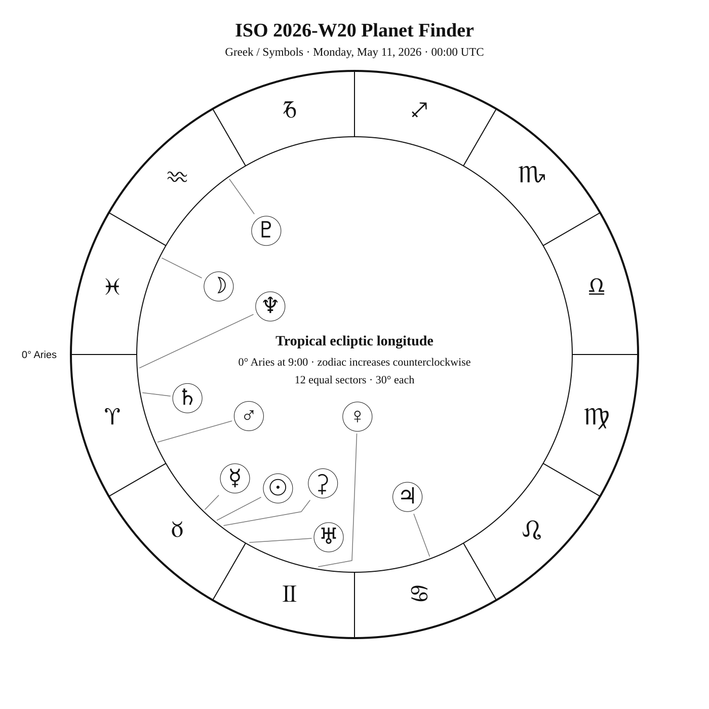
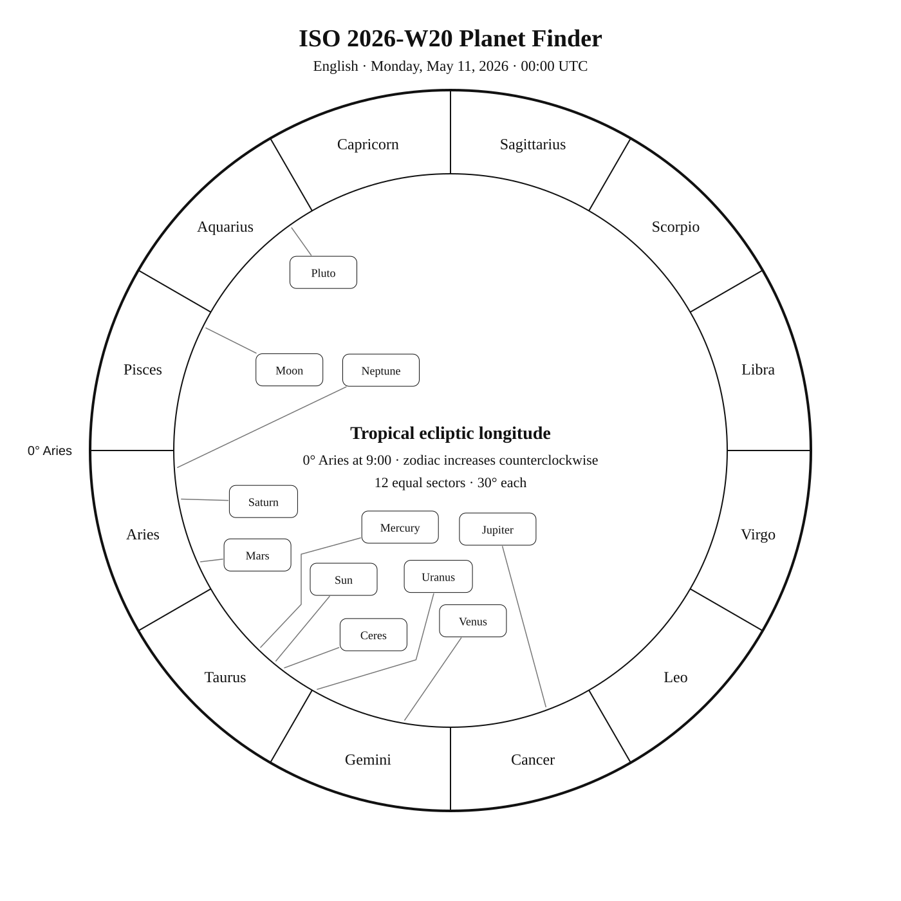
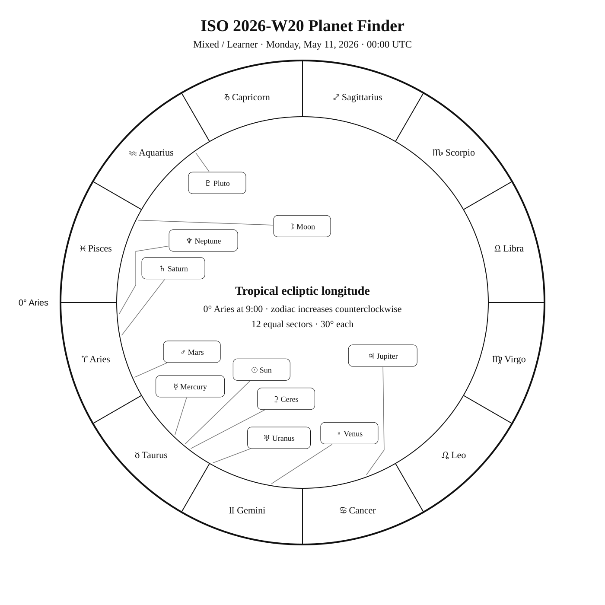

ISO 2026-W20
Week begins: Monday, May 11, 2026
Calendar
| Date | Zodiac day | Events |
|---|---|---|
| Mon, May 11, 2026 | ♉ 22 | |
| Tue, May 12, 2026 | ♉ 23 | M98 —  10 10.1 — Tropical Spring 10 10.1 — Tropical Spring |
| Wed, May 13, 2026 | ♉ 24 | β Cha —  4 4.2 — Antarctic Spring 4 4.2 — Antarctic SpringM99 — 10 9.9 — Tropical SpringM106 — 8 8.4 — Northern Spring |
| Thu, May 14, 2026 | ♉ 25 | M61 — 10 9.7 — Tropical SpringM40 — 8 8.4 — Northern SpringM100 — 9 9.3 — Tropical SpringM84 — 9 9.1 — Tropical Spring |
| Fri, May 15, 2026 | ♉ 26 | M85 — 9 9.1 — Tropical SpringM86 — 9 8.9 — Tropical SpringAcrux (α1 Cru) —  1 1.3 — Southern Spring 1 1.3 — Southern Springα2 Cru — 2 1.6 — Southern Spring |
| Sat, May 16, 2026 | ♉ 27 | 🌑 New Moon — 20:01:03 UTC M49 — 8 8.4 — Tropical SpringM87 — 9 8.6 — Tropical SpringGacrux (γ Cru) — 2 1.6 — Southern SpringM88 — 10 9.6 — Tropical Spring |
| Sun, May 17, 2026 | ♉ 28 | Chara (β CVn) — 4 4.2 — Northern SpringKraz (β Crv) — 3 2.7 — Tropical SpringM91 — 10 10.2 — Tropical SpringM89 — 10 9.8 — Tropical SpringM90 — 10 9.5 — Tropical Springα Mus — 3 2.7 — Antarctic Spring |
Weekly Solar-System Ephemeris
Snapshot: Week begins May 11, 2026, 00:00 UTC.
(-90° to +90°; default +45°)
| Body | ☉︎ | ☽︎ | ☿︎ | ♀︎ | ♂︎ | ♃︎ | ♄︎ |
|---|---|---|---|---|---|---|---|
| Ecliptic | ♉︎ 20°20′ β −0°00′ | ♓︎ 3°23′ β −0°13′ | ♉︎ 16°02′ β −0°29′ | ♊︎ 20°21′ β +1°19′ | ♈︎ 24°00′ β −0°49′ | ♋︎ 20°24′ β +0°24′ | ♈︎ 10°14′ β −2°12′ |
| Observing | ☉︎ | (-9.6) | ☉︎ (-1.8) | (-3.9) | (+1.2) | (-2.0) | (+0.9) |
| Rise | 04:40 | 01:50 | 04:33 | 06:14 | 03:41 | 08:36 | 03:19 |
| Set | 19:20 | 12:30 | 18:54 | 21:58 | 16:56 | 23:58 | 15:40 |
Extended targets:
| Body | ⚳︎ | ♅︎ | ♆︎ | ♇︎ |
|---|---|---|---|---|
| Ecliptic | ♉︎ 22°37′ β −3°35′ | ♊︎ 0°50′ β −0°10′ | ♈︎ 3°34′ β −1°20′ | ♒︎ 5°30′ β −4°05′ |
| Observing | ☉︎ (+8.7) | ☉︎ (+5.8) | (+7.8) | (+14.5) |
| Rise | 05:08 | 05:14 | 03:00 | 01:00 |
| Set | 19:18 | 20:13 | 15:07 | 09:48 |
β = ecliptic latitude (+ north, − south).
Rise and set are Local Apparent Time for the selected latitude.
Naked-eye classification becomes Daylight when the Sun is above the horizon at 21:00 LAT, and Solar Glare when the Sun is below the horizon but the body is too close to the Sun.
The Sun is classified by whether it is above or below the horizon at the observer reference time.
Planet Finder



Sky Notes
ISO 2026-W20 runs from May 11 through May 17. Venus is about 2.2° in ecliptic longitude from Elnath in Taurus.
Naked eye: 🌑 New Moon — 20:01:03 UTC. The dark Moon favors faint targets and extended star fields. Use Acrux, Alpha2 Cru, Gacrux, Kraz, α Mus as the week’s fixed-sky framework.
Planets: Venus is about 2.2° in ecliptic longitude from Elnath in Taurus.
Binoculars: Favor β Cha, Chara; wide fields help connect the charted geometry to the real sky.
Small telescope: Concentrate on M98, M99, M106, M61, M100, M84, M85, M86, M49, M87, M88, M91, M89, M90. Increase magnification only after the target and surrounding pattern are secure.
Substantial telescope: No fixed-sky Calendar object is classified as requiring a substantial telescope this week.
Other objects listed this week: None